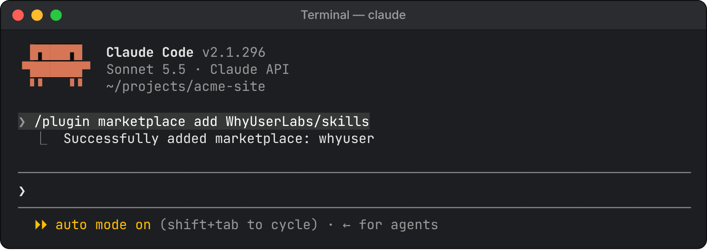
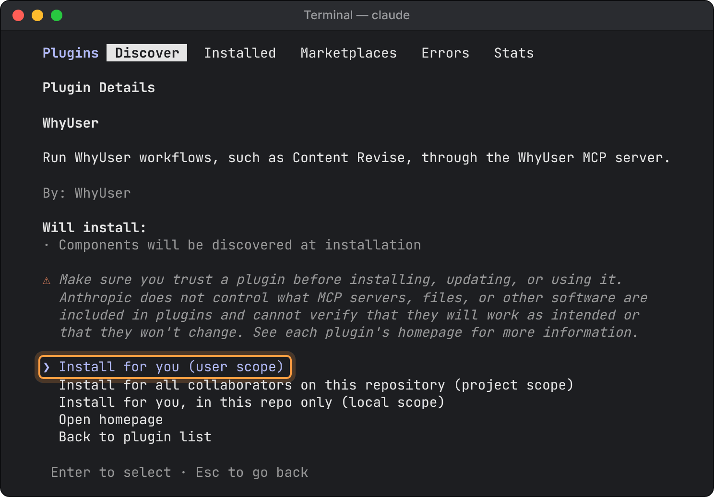

Before you start
WhyUser works in Claude through two parts. Every Claude app needs the first; the second tells Claude how to use it.
- The WhyUser connection
- Our MCP server plus your WhyUser key. It gives Claude your simulations, fixes, buyers and the steps of each workflow. Without it, nothing works.
- The WhyUser skill
whyuser is Claude’s way into WhyUser. For each request it picks the path: run a simulation, read your results, or run a workflow such as Revise Content or Find Common Patterns. On its own it does nothing: it only calls the tools the connection provides.
You will need
- Server address
https://mcp.beta.whyuser.com/mcp
Create your WhyUser key
Every setup starts with a WhyUser MCP key. Make one key per app, so you can replace or revoke one without breaking the others.
- Sign in to WhyUser and open Settings → AI assistant access.
- Click New key and name the app it is for, for example “Claude Code · laptop”.
- Choose the access:
- Read only: views simulations, buyers and audiences. Workflows still work on your existing simulations.
- Read and run: also starts new simulations, which uses credits. You see this choice only if a workspace admin has given you read and run on the Team page.
- Click Create key and copy it right away. It starts with
wu-mcp- and is shown only once.
- Open Show client configuration under the new key. It has the settings for each app, with your key already filled in.
Treat the key like a password. A key's access can't be changed later: to change it, create a new key and revoke the old one. If Settings says “Your AI assistant access is off”, ask a workspace admin to turn it on for you on the Team page.
Claude Code
One plugin adds both the WhyUser connection and the skill. It asks for your key and keeps it in your computer's secure storage (the macOS Keychain on a Mac).
- Start Claude Code (
claude in a terminal) and add the WhyUser marketplace:
/plugin marketplace add WhyUserLabs/skills

Claude Code confirms the marketplace is added.
- Install the plugin. This opens its details first:
/plugin install whyuser@whyuser
- Choose Install for you (user scope), so WhyUser works in every project.

Pick the first option: Install for you (user scope).
- Paste your WhyUser key when Claude Code asks for it. If it doesn't ask, run
/plugin configure whyuser@whyuser, or open the plugin under /plugin → Installed and choose Configure options.
- If Claude Code says so, run
/reload-plugins.
- Run
/mcp and check that whyuser is listed as connected.
Added WhyUser earlier with claude mcp add? Remove that entry with claude mcp remove whyuser (in your terminal). Otherwise Claude lists every WhyUser tool twice.
Get updates
Plugins from WhyUser's marketplace don't update on their own unless you turn that on. Run /plugin, open the Marketplaces tab, select whyuser and choose Enable auto-update. To update once instead, run /plugin marketplace update whyuser, then Update now on the plugin.
The Claude desktop app's Code tab uses the same settings: install the plugin there through + → Plugins → Add plugin after adding the marketplace.
Claude desktop app for macOS
The desktop app needs the WhyUser connection and the skill. Connect WhyUser in one of two ways, not both, or Claude lists every WhyUser tool twice.
Way 1: a connector on your Claude account
No extra software. Connectors belong to your Claude account, so one added in the browser also works here. If you or your organization owner already added WhyUser, skip to Add the skill. To add it, follow claude.ai in the browser below. The same steps work in the desktop app under Customize → Connectors.
Way 2: the desktop config file
Your own key on any plan, including Team and Enterprise members who can't add connectors themselves.
- Install Node.js (the LTS version) from nodejs.org. In Terminal,
node -v should print v18 or later.
- In Claude, open Settings → Developer → Edit Config. Finder shows
claude_desktop_config.json; open it in a text editor.
- Paste the configuration below, or copy it from WhyUser (Show client configuration → Claude Desktop), where your key is already filled in. If the file already has an
"mcpServers" section, add only the "whyuser" entry inside it.
{
"mcpServers": {
"whyuser": {
"command": "npx",
"args": [
"-y", "mcp-remote", "https://mcp.beta.whyuser.com/mcp",
"--transport", "http-only",
"--header", "Authorization:${AUTH_HEADER}"
],
"env": { "AUTH_HEADER": "Bearer wu-mcp-your-key" }
}
}
}Replace wu-mcp-your-key with your key, keeping Bearer and the space after it.
- Save the file. Quit Claude completely (Claude → Quit Claude, or Command-Q), and open it again.
- Check: Settings → Developer lists whyuser as running, and in a new chat + → Connectors shows WhyUser turned on.
Add the skill
- Turn on code execution, which skills need.
- Free, Pro and Max: in Settings → Capabilities, turn on Code execution and file creation.
- Team and Enterprise: an owner turns it on in Organization settings → Plugins & skills (Policy tab).
- Download whyuser.zip. Keep it zipped. If Safari unzipped it into a folder, right-click the folder and choose Compress.
- Open Customize → Skills, click +, then Create skill → Upload a skill, and choose the zip.
- Check that whyuser is turned on in the list.
Added the earlier whyuser-workflows skill? It was renamed to whyuser. Turn the old one off or delete it in Customize → Skills, then upload whyuser.zip. Otherwise Claude may pick the old one.
The skill belongs to your Claude account, so it also works in the browser. Your account keeps the copy you uploaded: when WhyUser updates the skill, upload the new zip. A changed workflow needs no new upload, because Claude gets each workflow’s steps from WhyUser on every run.
claude.ai in the browser
In the browser, WhyUser is a custom connector on your Claude account, and your key travels as a request header.
Request headers are in beta. Claude offers them to a limited set of organizations for now. If the
Add custom connector dialog has no
Request headers section, use the
desktop config file or
Claude Code for now.
Who adds it
- Free, Pro, Max
- You add it, with your own key. Free plans allow one custom connector.
- Team, Enterprise
- An owner adds it (on Enterprise, also anyone whose role can manage connectors). Everyone in the organization shares one key.
Add the connector (Free, Pro, Max)
- Go to Customize → Connectors (claude.ai/customize/connectors), click + Add, then Add custom connector.
- Name it WhyUser and enter the server URL
https://mcp.beta.whyuser.com/mcp. Click Continue.
- Under Authentication, choose No sign-in. WhyUser uses a key, not a sign-in, so change any option Claude marks as “Detected”.
- Under Request headers, pick authorization and enter
Bearer wu-mcp-your-key: the word Bearer, a space, then your key. Mark it Required.
- Click Add.
Add the connector (Team and Enterprise owners)
- Go to Organization settings → Connectors (claude.ai/admin-settings/connectors), click Add, then Custom → Web.
- Fill in steps 2–4 above.
- Use a key made for this connector. Everyone who uses it acts with that key's access, and WhyUser records the key's owner for every call. Make it Read only unless everyone should be able to start simulations, which use credits.
Members then open Customize → Connectors, find WhyUser (labelled “Custom”) and click Connect. A member who needs a key of their own can use the desktop config file or Claude Code.
Turn it on in a chat
Click + at the lower left of the chat box, open Connectors and turn on WhyUser.
Add the skill
Follow Add the skill in the desktop section; the menus are the same in the browser. Team and Enterprise owners can add it for everyone under Organization settings → Plugins & skills.
Check that it works
Ask for something small first, then run a workflow.
- Start a new chat (in Claude Code, a new session). In the desktop app and the browser, check that WhyUser is on under + → Connectors.
- Ask:
Use WhyUser to give me an overview of my workspace.
Claude should list your simulations and committees, and say whether your key can start simulations.
- Run Revise Content:
Revise https://your-site.com/pricing with WhyUser and get it ready for sign-off.
Claude asks one question (which simulation to work from, or a new one with its credit cost), writes the revised content and saves the run. WhyUser audits it and returns a link to the run page, which members of your workspace can open.
Name WhyUser in the request, so Claude uses the WhyUser skill rather than another one. Claude asks your permission before tools that save a run or start a simulation; the reading tools can be allowed once for good.
Other things to ask:
What should I fix on https://your-site.com/pricing?
Run a buying committee simulation on https://your-site.com/pricing with WhyUser.
Claude shows the credit cost and starts only when you say yes.Find common patterns across our last 10 runs with WhyUser.
This runs Find Common Patterns: what keeps working and breaking across pages, Audience Discovery runs and ad campaigns.Did my last page changes land?
File the fixes for this page as tickets
(with your tracker's connector on)
Replace or revoke a key
Revoke a key in WhyUser under Settings → AI assistant access → Revoke. It stops working within 30 seconds. Workspace admins can revoke any key in the workspace on the Team page.
To replace a key (it leaked, or you need a different access level), create a new one, put it in the app, then revoke the old one:
- Claude Code plugin
- Run
/plugin configure whyuser@whyuser and paste the new key.
- Desktop config file
- Change
AUTH_HEADER in claude_desktop_config.json, then quit and reopen Claude.
- Custom connector
- Remove WhyUser under Customize → Connectors (owners: Organization settings → Connectors) and add it again with the new key. Claude can't edit a saved header. Members click Connect again.
Troubleshooting
Find the message or behaviour you see. Each one has the cause and the fix.
“This MCP key is unknown or revoked, or its owner's AI assistant access is off”
WhyThe key was revoked or mistyped, or a workspace admin set your access to Off.
FixCreate a new key, or ask an admin to turn your access on (Team page).
“Missing credential” or “This server accepts WhyUser MCP keys only”
WhyThe header is missing Bearer , or the value isn't a WhyUser key.
FixEnter Bearer wu-mcp-…: the word Bearer, a space, then the key.
Every WhyUser tool appears twice
WhyWhyUser is connected two ways: the plugin and claude mcp add, or a connector and the config file.
FixRemove one connection.
Desktop: whyuser isn't running in Settings → Developer
WhyNode.js isn't installed, or Claude can't find it.
FixInstall Node.js LTS, then quit and reopen Claude. If you installed Node with nvm, set "command" to the full path that which npx prints.
Claude Code: whyuser shows as failed in /mcp
WhyThe key isn't set.
FixRun /plugin configure whyuser@whyuser.
No Request headers section when adding the connector
WhyClaude hasn't turned this beta on for your account.
FixUse the desktop config file or Claude Code.
The skill upload is refused
WhyThe zip was unpacked, or isn't the WhyUser file.
FixDownload it again. If Safari unpacked it, compress the whyuser folder.
Claude doesn't follow the workflow
WhyThe skill or code execution is off, or the request didn't name WhyUser.
FixTurn both on and say “with WhyUser” in the request.
The WhyUser skill appears twice in Claude Code
WhySkills you upload on claude.ai also load in Claude Code, beside the plugin's copy.
FixNothing. It's harmless, and Claude uses one copy.
Claude says your key can't start simulations
WhyThe key is Read only, or your access is Read only.
FixWorkflows still use existing simulations. For new ones, ask an admin for Read and run, then create a new key with it.
Claude uses the old whyuser-workflows skill
WhyThe earlier skill is still on in Customize → Skills.
FixTurn it off or delete it, and upload whyuser.zip. In Claude Code, update the plugin.
Still stuck? Send us the app you use, the message you see, and the key's name. Never send the key itself.
Claude's own documentation